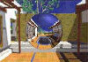
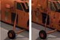
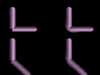

|
|
| 当前位置：电脑报电子版 > 1999 年 > 45 期 > 软件世界 > 有你3D更完美——DirectX 7.0的3D图形处理技术 |
| 《 有你3D更完美——DirectX 7.0的3D图形处理技术 》 |
| 在Windows的多媒体世界，不论是游戏，还是一些播放程序，缺了DirectX可是不行的。前不久微软正式发布的最新版DirectX 7.0，包含了大量先进的新技术，并且修正了以前版本的一些 BUG，系统运作的稳定性大大加强，能够让游戏跑得更顺，画质更棒。这里我们想与大家讨论一下DirectX 7.0中的Direct3D的图形部分，作为标准的3D API，它的新技术改进相信能让Windows系统具有更好的3D图形处理效果，而且在兼容性上具有更好的表现。
立体环境映射 我们可以设想一下没有倒影的大自然，如果你看看水池却没有看见任何倒影，该会有怎样的感觉呢？PC图形处理的目标是完善视觉体验的逼真性，但准确、实时的渲染处理在实际中证明是很难实现的。如果使用一些不太正确的表面细节来制作电脑影像，往往看上去很不真实，而且有明显的缺陷。如果要制作和片一样逼真的效果，往往要求表面能够像在自然界一样反射光线。然而借助当今的硬件和普通软件，不可能毫无缺陷地制作出准确的倒影。这样，电脑合成的环境经常是很简单和非常糟糕的，因此开发商一直不得不避免制作反射的表面。DirectX 7.0引入了立体环境映射，向实时制作逼真的映像和光照提出了挑战。DirectX 7.0。与高性能显示卡立体环境映射结合使用，主流PC机用户将能体验到令人震惊的实时和准确的倒影，以及一般软件难以制作出来的特殊的光照效果。使用立体环境映射，开发商可以利用正确的倒影，大大丰富3D影像，并且提高游戏的效果。正确实时的倒影可以使人物看清周围的3D影像，这也许会在下一代游戏中看到。立体环境映射在视觉真实性方面进了一大步，它很容易被DirectX 7.0和高性能显示卡充分支持和使用。 图1是使用立体环境映射在一个球形镜面上反射环境的一个例子。其逼真的效果可能我们大家在没有看到这幅画面之前，想都没有想过吧——这简直就和真实环境没有什么区别嘛！ 硬件变换和光照  所有实时3D图形应用软件的基本构成单元都是多边形，其中以三角形为典型。三角形是将三个顶点相连而成，这些顶点带有位置、颜色、光照、材质和其他必要的参数，再用这些三角形构造图片。为制作更为逼真的影像，应使用更多的三角形（即更多的顶点）。当今，先进的图形硬件，能在一秒钟内制作出成百上千万个像素。不幸的是，制作如此多的三角形，控制它们并把它们从主处理器上传递到图形硬件上的过程已经超出了个人电脑的能力。即使当今最快的Intel或AMD处理器都会被完全耗尽资源，无法再做任何其它事情。这是谁都不想看到的结果，因为像游戏这样的应用软件需要做的工作不仅仅是制作三角形来绘图，它们还需要运行复杂的人工智能（AI）运算，以赋予游戏中人物的生命及复杂的物理特征，以及游戏中物体和人物之间的冲突，还有先进的网络功能及其他一些挑战电脑的任务。使用硬件支持的DirectX7.0的变换和光照功能，是打破通往交互式美妙体验的最大障碍。变换和光照是3D图形流程四个主要步骤的前两个（或制作3D图形一系列步骤的前两步）。这两步对数学运算都有很高的具体要求。它们还具有高度的重复性，每秒钟都要成百上千万次地执行同样一套指令，这样，变换和光照都成为硬件加速最好的选择对象。 描述和显示3D图形物体和环境的过程是十分复杂的，为了减少这种复杂性，可以根据不同时间不同的参考坐标或不同的协调系统来描述3D数据。这些不同的参考坐标就像现实空间、视角空间和屏幕空间一样，现实空间对于制作3D图像时必须执行的操作十分便利。现实空间对于建造组成3D世界的3D物体来说是很方便的。视角空间用于光照和选切，而屏幕空间对于在图形帧缓存中存储影像来说是十分便利的。然而，因为这些空间使用不同的坐标系统，当3D数据在3D流程中移动时，这些数据必须从一个空间转换到另一个空间，变换引擎必须执行所有的数学转换。 光照引擎与变换引擎相似，这个引擎计算射到3D影像物体上的光线向量，以及物体反射到人眼中的光线向量。根据定义，向量包括有关方向和距离的信息。光照引擎也必须将长度或距离信息和方向信息分开，这将简化3D流程以后的步骤。光照计算将用于顶点光照，例如先进的雾化效果。事实上几何图形的变换和光照的使用已成为普通PC机上实现更加复杂的3D图形的最大障碍。这一难关已经迫使软件开发商限制3D人物和环境几何图形的复杂性，用牺牲图像质量并精心制作3D环境，以维持期待的执行效果。变换引擎是克服几何图形执行难关最有效的方法，它为软件开发商带来了新机遇，可以在他们的3D世界中添加更多的几何细节。就像图2所显示的那样，使用更多的多边形可以使物体具有更加逼真生动的效果。左图中的图像是当今游戏所能提供的最好的和具有代表性图像。整个图像由998个多边形组成。右图是下一代图像所能提供的图片，其中包括100000个多边形。请注意，由于被迫减少多边形的数量，左图图像中的大多数细节几乎全部丢失，从而造成缺乏逼真感。请注意左图中的轮子是八边形的，而右图中的轮子却是圆的。这些微妙的细节将为制作生动的交互式图像的工作带来巨大的不同。 顶点混合 顶点混合是一项先进技术，它允许游戏开发商在几何模型多重部分之间创建平滑的连接点。结合硬件使用顶点混合技术使得游戏开发商有更多的自由空间去设计更逼真、更生动的事物和几何体。顶点混合对于逼真的事物和生动的动画尤其有用。它允许开发商将几何体不同部分无缝粘结，形成毫无断缝和接痕的完整连续表面。具体的实例是人类的上臂和小臂的完美结合。正如图3所示的简单几何体，如何使用连续平滑的表面来连接几何体的两个独立部分。左边的图形显示的是今天的游戏开发商需要处理的问题，裂缝和看得见的接痕。右边的图形显示的是游戏开发商使用DirectX和支持顶点混合技术的显卡表现出来的完全连续平滑、毫无裂缝的表面。Direct3D作为微软提供的全兼容的标准3D API，提供了全新的3D处理功能，通过它可以和任何的硬件与软件产品结合起来，创造逼真的3D画面，以达到完美的图像表现，而这些是开发商和使用者都期待已久的。 (Hitzone工作组) |
| 下载本期推荐软件 | 页 首 |
| 《电脑报》版权所有，电脑报网站编辑部设计制作发布 |